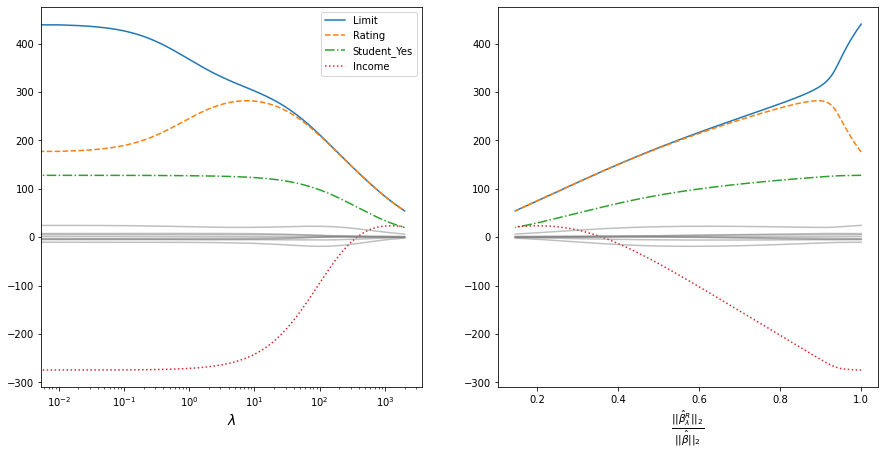
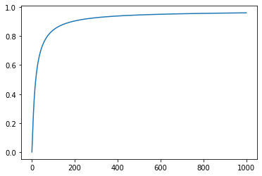

import pandas as pd
import numpy as np
import matplotlib.pyplot as plt
from sklearn.linear_model import Ridge
from sklearn.preprocessing import OneHotEncoder
from IPython.display import clear_outputИсточники
Разбор способа отбора модлеи - L2-регуляризация
- https://www.statlearning.com/ 6 глава.
Описание
При L2-регуляризации в целевую функцию метода оценки коэффициентов добавляют компоненнту:
\[\lambda\sum_{j=1}^n\beta^2_j\]
Где: - \(\beta_j\) - оцениваемый коэффициент; - \(\lambda\) - параметр указывающий на сколько сильно следует регуляризовать модель.
L2-регуляризация и регуляризация, в принципе, нужна для того, чтобы модель получала штраф за использование коэффициентов, которые ей на самом деле не нужны.
Гребеньковая регрессия
Описание
L2-регулялизация в сочетании с регрессионной моделью, называются гребеньковой регрессией (ridge regression). Т.е. целевая функция в задаче оптимизации принимает вид:
\[\sum_{i=1}^n\left(y_i - x_i\beta\right)^2 + \lambda\sum_{j=1}^p\beta_j \rightarrow min\]
Где: - \(n\) - объемы выборки; - \(p\) - размерность данных; - \(x_i = (x_{i1}, x_{i2}, ..., x_{ip})\) - вектор описывающий \(i\)-е наблюдение; - \(\beta = (\beta_1, \beta_2, ..., \beta_p)\) - вектор оценок коэффициентов.
Рекомендуется стандартизация данных
Перед применением Гребеньковой регрессии данные рекомендуется стандартизовать по формуле.
\[\tilde{x}_{ij} = \frac{x_{ij}}{\sqrt{\frac{1}{n}\sum_{i=1}^n (x_{ij} - \bar{x}_{j})^2}}.\]
Где: - \(\bar{x}_{j}\) - среднее значенте по \(j\)-му показателю.
Подробнее о стандартизации можно узнать тут.
Демонстрация “сжатия” коэффициентов
Воссоздается пример приведенный в ISLR.
Загрузка данных Credit
Credit = pd.read_csv("Credit.csv", index_col = 0)
nominal_names = [
"Gender", "Student", "Married", "Ethnicity"
]
ohe = OneHotEncoder(
sparse = False, drop = "first"
).fit(
Credit[nominal_names]
)
Credit = pd.concat(
[
pd.DataFrame(
ohe.transform(Credit[nominal_names]),
columns = ohe.get_feature_names_out(),
index= Credit.index
),
Credit.loc[:,~Credit.columns.isin(nominal_names)]
],
axis = 1
)
X = Credit.iloc[:,:-1]
y = Credit.iloc[:, -1]
Credit.head()| Gender_Female | Student_Yes | Married_Yes | Ethnicity_Asian | Ethnicity_Caucasian | Income | Limit | Rating | Cards | Age | Education | Balance | |
|---|---|---|---|---|---|---|---|---|---|---|---|---|
| ID | ||||||||||||
| 1 | 0.0 | 0.0 | 1.0 | 0.0 | 1.0 | 14.891 | 3606 | 283 | 2 | 34 | 11 | 333 |
| 2 | 1.0 | 1.0 | 1.0 | 1.0 | 0.0 | 106.025 | 6645 | 483 | 3 | 82 | 15 | 903 |
| 3 | 0.0 | 0.0 | 0.0 | 1.0 | 0.0 | 104.593 | 7075 | 514 | 4 | 71 | 11 | 580 |
| 4 | 1.0 | 0.0 | 0.0 | 1.0 | 0.0 | 148.924 | 9504 | 681 | 3 | 36 | 11 | 964 |
| 5 | 0.0 | 0.0 | 1.0 | 0.0 | 1.0 | 55.882 | 4897 | 357 | 2 | 68 | 16 | 331 |
Будем повышать параметр регуляризации и забирать значения коэффициентов. Процедура достаточно долгая, потому предполагается провести расчет и результаты отложить в файл.
coefs_frame = pd.DataFrame(columns = X.columns)
stand_X = X/np.sqrt(((X - X.mean())**2).sum()/X.shape[0])
alphas = np.arange(0, 2000, 0.01) int_count = len(alphas)
for i, alpha in enumerate(alphas): clear_output(wait=True) print(“{}/{}”.format(i, int_count)) coefs_frame.loc[alpha] = pd.Series( Ridge(alpha = alpha).fit(stand_X,y).coef_, index = X.columns )
coefs_frame.index.name = “alpha” coefs_frame.to_csv(“l2_reg_coefs.csv”)
Полученные значения коэффицентов нанасем на графики.
coefs_frame = pd.read_csv("l2_reg_coefs.csv", index_col = 0)
plot_var_names = ["Limit", "Rating", "Student_Yes", "Income"]
line_styles = ['-', '--', '-.', ':']
beta_0 = np.sqrt(np.sum(coefs_frame.loc[0]**2))
coefs_frame["beta_i/beta_0"] = coefs_frame.apply(
lambda row: np.sqrt(np.sum(row**2))/beta_0,
axis = 1
)plt.figure(figsize = [15, 7])
plt.subplot(121)
for i in range(len(plot_var_names)):
plt.plot(
coefs_frame.index,
coefs_frame[plot_var_names[i]],
linestyle = line_styles[i]
)
for col in coefs_frame.loc[
:, ~coefs_frame.columns.isin(plot_var_names)
]:
plt.plot(
coefs_frame.index, coefs_frame[col],
color = "gray", alpha = 0.5
)
plt.legend(plot_var_names)
plt.xlabel("$\\lambda$", fontsize = 14)
plt.gca().set_xscale("log")
plt.subplot(122)
for i in range(len(plot_var_names)):
plt.plot(
coefs_frame["beta_i/beta_0"],
coefs_frame[plot_var_names[i]],
linestyle = line_styles[i]
)
for col in coefs_frame.loc[
:, ~coefs_frame.columns.isin(plot_var_names)
]:
plt.plot(
coefs_frame["beta_i/beta_0"], coefs_frame[col],
color = "gray", alpha = 0.5
)
plt.xlabel(
"$\\frac{||\\hat{\\beta}_{\\lambda}^R||_2}{||\\hat{\\beta}||_2}$",
fontsize = 15
)Text(0.5, 0, '$\\frac{||\\hat{\\beta}_{\\lambda}^R||_2}{||\\hat{\\beta}||_2}$')
- На графике слева показано как сходятся коэффициенты при увеличении параметра регуляризации. Для наглядности взята логарифмическая шкала для параметра регуляризации. Цветом и стилем линии выделены самые заметные коэффициенты - данные стандартизованы, потому масштаб величин не имеет занчения;
- На графике справа по ординате отложена верличина:
\[\frac{||\hat{\beta}_{\lambda}^R|_2}{||\hat{\beta}||_2}\]
Где: - \(||\beta||_2 = \sqrt{\sum_{j=1}^p \beta^2_j}\) - евклидово расстояние коэффициентов \(\beta\) от начала координат; - \(\hat{\beta}\) - коэффициенты получаемые по методу наименьших квадратов (эквивалентны коэффициентам полученным при \(\lambda = 0\)); - \(\hat{\beta}^R_{\lambda}\) - коэффициенты полученные при использовании регуляризации.
Смещение, диспесия и ошибка
Утверждается, что регуляризация положительно влияет на свойства модели потому, что достигается более точный баланс между дисперсией и смещением. Убедимся в этом воспроизведя вычисленный эксперимент предложенный в ISLR.
np.random.seed(10)
n = 50; p = 45
X = np.random.rand(n, p)
y = np.dot(X, np.random.rand(p)) + np.random.normal(0, 0.003, n)
lambdas = np.arange(0, 1000, 0.1)
quadr_error = []
for lambda_ in lambdas:
model = Ridge(alpha = lambda_).fit(X,y)
quadr_error.append(np.sum((y - model.predict(X))**2)/n)plt.plot(lambdas, quadr_error)